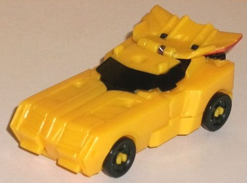
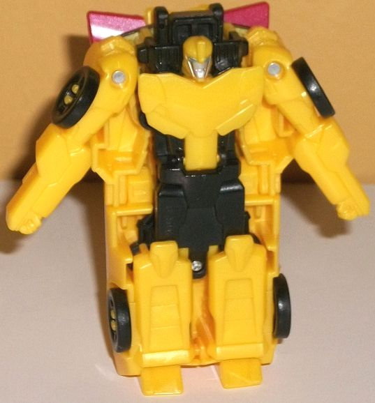
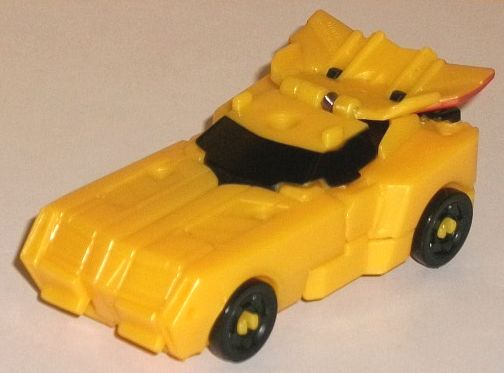
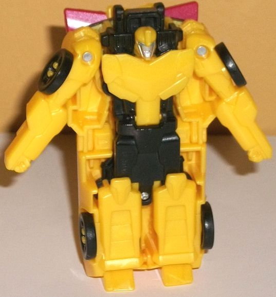
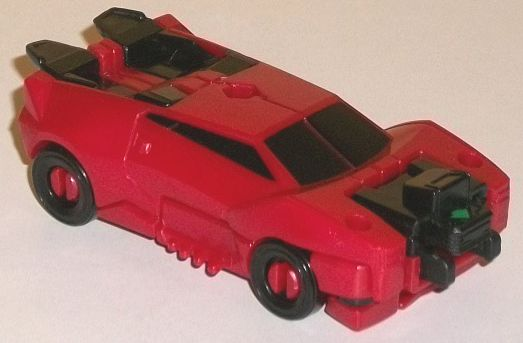
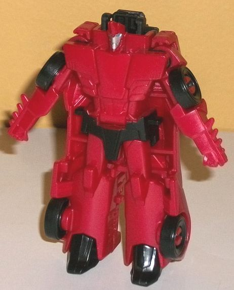
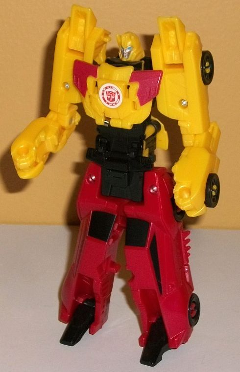

 
Difficulty of Transformation : Very Easy
Color Scheme : Milky moderately dull yellow, black, and some silver, metallic moderately dull red, dull forest green, and moderately light blue
Individual Rating : 3.9
Allegiances
: Autobot
Size
: Crash Combiner 2-pack
Overall Rating
: 4.8
 Bumblebee
Bumblebee


Difficulty of Transformation
: Very
Easy
Color Scheme
: Milky moderately dull
yellow, black, and some silver, metallic moderately dull red, dull forest
green, and moderately light blue
Individual Rating
: 3.9
You know what Bumblebee's
RID2015 vehicle mode looks like by now, and the Crash Combiner version
of him has a vehicle mode that looks a bit like a "chibi" version him;
it's definitely thicker (in terms of the car body from the top of the hood
to the bottom) proportionally than on most of his other toys, and the hood
doesn't stick up as much above the main car body as it usually does. There's
also the rear of the combined mode chest on the top of the back, where
it looks like some kinda funky oversized spoiler. (The actual back end
has the Crash Combiner port, so unfortunately no room for headlights back
there.) Bumblebee has the most basic of details in this mode-- his trio
of angular diagonal shapes on each side of his front hood, some basic angular
front grill and window details-- but that's about it. There really isn't
any mold detailing on the sides of this mode at all, except for the hubs
on the wheels. The predominant color in this mode is a milky, moderately
dull yellow, which doesn't look quite as good as a more "pure" yellow but
still gets the job done. And, of course, we've got black on the wheels,
front and side windows, and then on the rear connection point. Paint wise
he's VERY sparse in this mode, with just the windows painted black and
then some forest green on the arrow where his combiner connection port
is. (I'm getting rather tired of Bumblebee toys that don't even have his
stripes.)
Bumblebee's transformation
is like most of the other individual Crash Combiners, in that his robot
mode is mostly detailed on the underside of his vehicle mode. Open up his
chest panel, flip out the head, spread out the arms from the sides, and
then flip around his feet from the front of the vehicle mode. That's it.
Yep, these individual robot modes definitely get the short end of the stick
as far as Crash Combiners go, though to be fair RID2015 Bumblebee certainly
wasn't designed with any sort of combining in mind. Just like in vehicle
mode, he's got the basic mold details here-- the faux crumpled car-front
chest, some fist details on his lower arms, the vent details on his lower
legs, some basic hip details-- but nothing outstanding, though his headsculpt
is pretty well-done for the size (even though his head itself is a bit
small proportionally). He's got some silver paint on his face and fairly
light blue paint on his eyes, but that's it-- NO other paint at all in
this mode, though at least his black plastic breaks up the yellow a bit
better. There's some pretty substantial sections of car sticking out of
the sides of his body, being rather huge and making him look kinda chubby.
That said, the combined mode chest-- which sticks out a bit from the top
of his back-- does kind of look like the car windows on his back on larger
more detailed figures. For articulation, he can move his arms out the sides
at the shoulders, and his feet can move SLIGHTLY back-and-forth at the
ankles, but that's it.
 Sideswipe
Sideswipe


Difficulty of Transformation
: Very
Easy
Color Scheme
: Dark milky semi-metallic
red, black, and some dull forest green, silver, and moderately light blue
Individual Rating
: 4.2
Sideswipe's vehicle mode
is fairly accurate to his previous RID2015 toys, with two major differences.
The first is the blatantly obvious connector port on the front end, which
basically replaces his enitre front grill (though there are tiny headlights
on the sides of it). The second is that the feet are pretty obvious on
the back end, being both different in color from the surrounding parts
and sticking out on the top of the back end a bit obnoxiously. Because
they have to fold down for the transformation, there isn't really any back
end to this mode either, just gaps for the feet to fold through. Still,
beyond those two big issues, this is pretty close to your other Sideswipe
toys. The mold detailing is fairly basic, but not AS basic as with Bumblebee,
with some details like the door handles, little spikes on the lower sides
below the car doors, and the ridges on his rear windows molded in. As usual,
his two major colors are black and a dark semi-metallic red with some glitter
mixed in. They go with each other well, though as with most of his other
toys I wish there was a major light color in this mode. There is some black
paint on the side and front windows, and a bit of forest green on the arrow
on his connector port, but sadly no other paint in this mode.
Much like Bumblebee
(and most other Crash Combiners), to transform Sideswipe you just stand
him up, open up the chest and take out the robot head, slide out the robot
arms from the sides, and then flip down the feet-- his robot mode is molded
into the bottom of the vehicle mode. Most of my comments on Bumblebee mostly
apply here to Sideswipe as well. The main mold details are here, with the
spikes and fists molded on his arm pieces; the basic angular details on
his legs and waist; and the faux flat car front on his chest. His headsculpt
is fairly well-done with his "punk" hairdo, though it's too small proportionally,
particularly when compared to his chest. He is taller than Bumblebee in
this mode, though, so he doesn't look as "squat" and fat. His chest details
are also fairly accurate-- certainly moreso than 'Bee's. Obviously with
the entire car mode on his back, there's some substantial kibble here,
the worst of which is the entire sides of his car mode just sticking out
blatantly from his waist, lower body, and upper legs. On a lesser note,
his connector also sticks out a bit behind his head. The paint apps are
again pretty sparse in this mode, with only some silver on his face and
light blue on his eyes, and some black on his waist. He can also only move
slightly at the ankles and side-to-side at the shoulders, with no other
articulation in this mode-- just like Bumblebee.
 Beeside
(Combined Form)
Beeside
(Combined Form)

Difficulty of Transformation
: Easy
Individual Rating
: 6.4
For Beeside, crash the
front end of Sideswipe into the back end of Bumblebee, and the upper portion
will automatically transform while you split Sideswipe's vehicle mode into
two halves and flip out the feet. The bottom portion of the toy is thoroughly
uninspiring-- I kinda wish they did a bit more than just split him in half
with feet, but then again that IS how most Crash Combiner lower halves
transform. On the plus side, they're fairly well-proportioned for legs,
and the feet look like larger versions of Sideswipe's normal angular feet,
which is a nice aesthetic decision. The upper half has the sides of the
car mode form the arms and reveal the combined form head, while the center
portion has the back vehicle portion flip forward to become the chest.
The arms are the weakest portion of the upper body, as the lower arms are
a bit oddly structured due to the vehicle mode proportions and transformation--
the lower arms oddly stick out some more out of the sides below the elbow,
with the wheels sticking out a bit obnoxiously from the underside of the
fists. (Back-and-forth at the elbow is the only place Beeside can move
in this mode, by the way-- articulation is definitely
not
the point
of Crash Combiners.) What IS cool about the arms, though, is that the instructions
say to flip 'Bee's feet forward so the bottoms face forward on the shoulders.
This reveals missile pod details on the inside, giving Beeside some nice
hidden firepower. The mold detailing on the chest is very well-done, with
details on the black portion that resemble Sideswipe's stomach details
in robot mode (though this part is a bit oddly long, proportionally). The
chest piece has two sets of faux windows on it, like Bumblebee and Sideswipe's
windows are both folding over each other, and with some red "spoiler-like"
pieces coming off the sides. Again, it's a nice meshing of Sideswipe's
aesthetic with Bumblebee's. The headsculpt also continues this, with the
general shape of Bumblebee's head but with little spikes on the side calling
to Sideswipe's "punk hairdo", and a face mask that looks like Sideswipe's.
As for the color scheme, the yellow, black, and red go together well enough,
even if it's not particularly exciting-- the black helps to "mesh" the
two other main colors together at the center. Unfortunately there isn't
much paint unique to this mode-- just the silver and light blue on the
combined mode face, as well as red on the upper sides of the chest. However,
the red paint on the chest is noticeably lighter than on Sideswipe, so
it unfortunately doesn't match.
Beeside's strength lies
in the combined mode, as with most Crash Combiner modes. His chest plate,
shoulders, and face look pretty cool in that mode, though the arms are
a bit oddly proportioned. The individual vehicle modes are okay, but the
individual robot modes are pretty bad-- molding the whole mode on the bottom
of the vehicle mode just doesn't do it with these already-established designs,
gimmick or not. This isn't QUITE the weakest Crash Combiner set, but it's
pretty close. Only recommended for completists.
Review by Beastbot